B
Patente B
Teoria, quiz e guide con vetture a cambio manuale o automatico.
Informazioni →Autoscuola a Monopoli (BA)
Teoria, quiz digitali e guide pratiche con istruttori qualificati, aule attrezzate e un parco veicoli completo e moderno.
Formazione completa
Dai primi ciclomotori alle patenti professionali: scegli il percorso adatto alle tue esigenze.
Teoria, quiz e guide con vetture a cambio manuale o automatico.
Informazioni →Preparazione per ciclomotori con mezzi automatici e meccanici.
Informazioni →Formazione completa per le principali categorie motociclistiche.
Informazioni →Percorsi dedicati alle categorie professionali C, D ed E.
Informazioni →Qualificazione e aggiornamento professionale dei conducenti.
Informazioni →La nostra sede
Autoscuola Ciccio mette a disposizione spazi luminosi e attrezzati per seguire le lezioni teoriche e svolgere le esercitazioni quiz al computer.
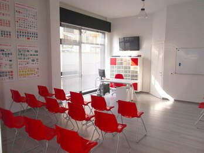
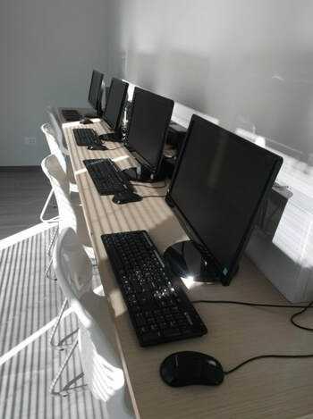
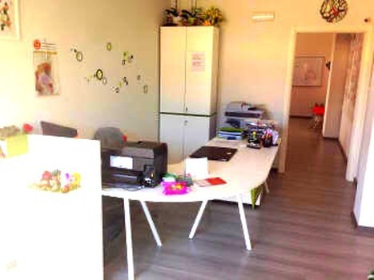
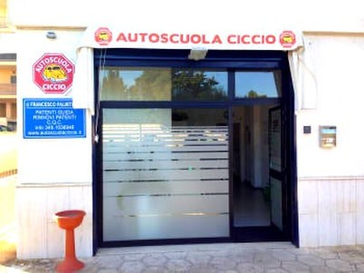
Vieni a trovarci
Contatta la segreteria per conoscere documenti, costi, disponibilità dei corsi e calendario delle guide.
Apri su Google MapsIl nostro parco mezzi
Mezzi diversi per categoria, cilindrata e tipologia di cambio.
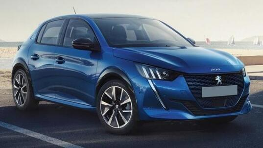
Cambio manuale
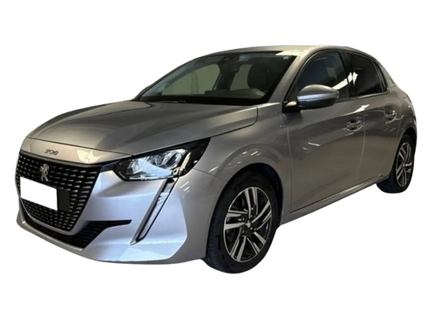
Cambio manuale
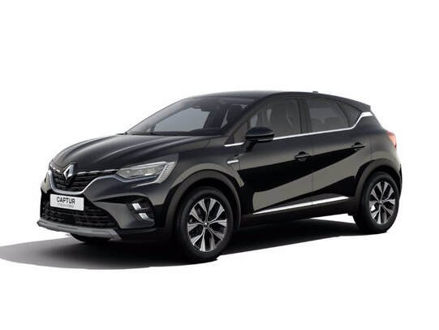
Cambio automatico
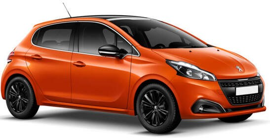
Cambio manuale
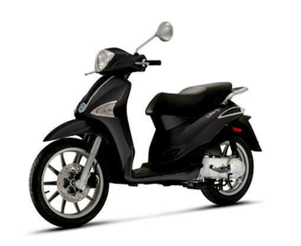
Cambio automatico
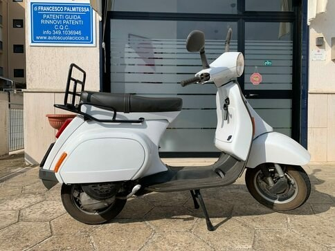
Cambio manuale
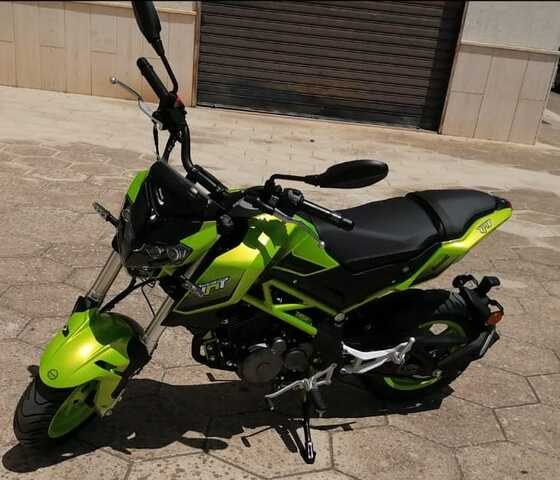
Cambio manuale
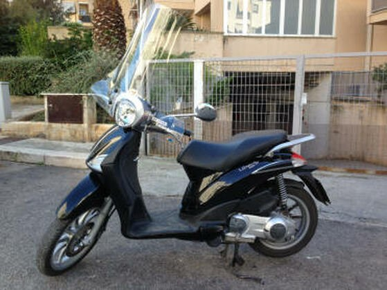
Cambio automatico
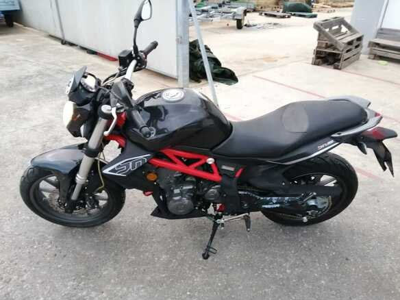
Cambio manuale
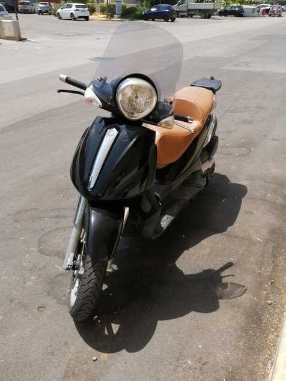
Cambio automatico
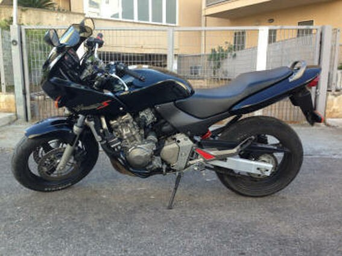
Cambio manuale
Il percorso
Dall’iscrizione all’esame, un percorso seguito passo dopo passo.
Verifica dei requisiti e della documentazione necessaria.
Lezioni in aula ed esercitazioni digitali assistite.
Lezioni su strada con il veicolo adatto alla categoria.
Preparazione finale per affrontare la prova con sicurezza.
Organizza lo studio
Più opportunità durante la settimana per seguire teoria ed esercitazioni.
Gli orari possono subire variazioni: verifica sempre il calendario aggiornato con la segreteria.
Inizia il tuo percorso
Chiamaci per ricevere informazioni su iscrizioni, documenti, corsi, guide e rinnovi.
La segreteria è a disposizione per indicarti il percorso più adatto.
Chiama 080 3210286 Ottieni indicazioni